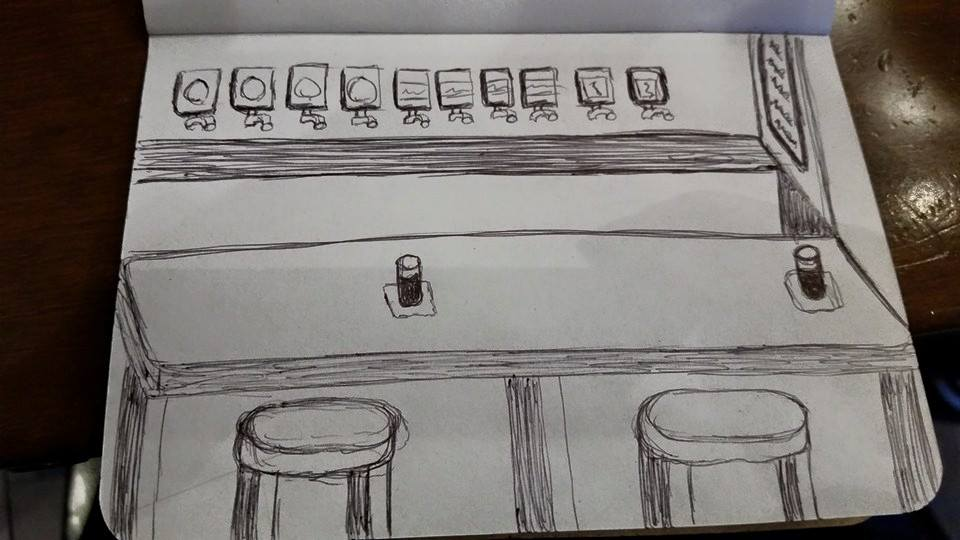

We are preparing to open a board game pub in Kitsap County. We will serve local beers, ciders and wine, along with great games. Play any of our large selection of games from 1 to many players, with guidance from our knowledgeable bartenders.
At this time we do not serve food, but feel free to bring in your own. We will have menus for all the local delivery services for your convenience.
We are a Safe Place and we welcome all!
